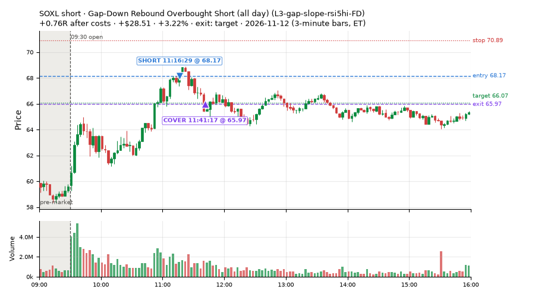
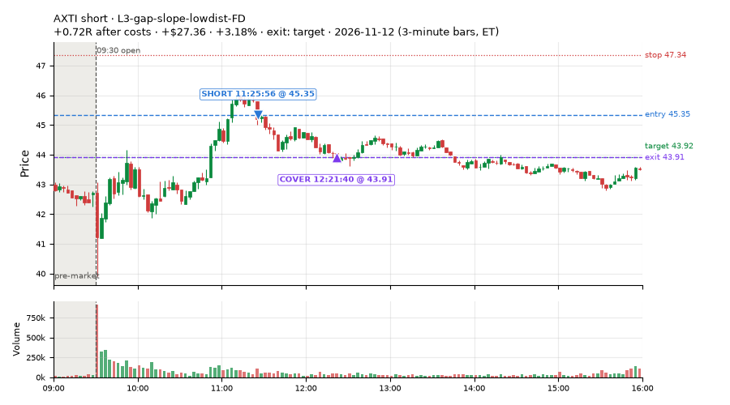
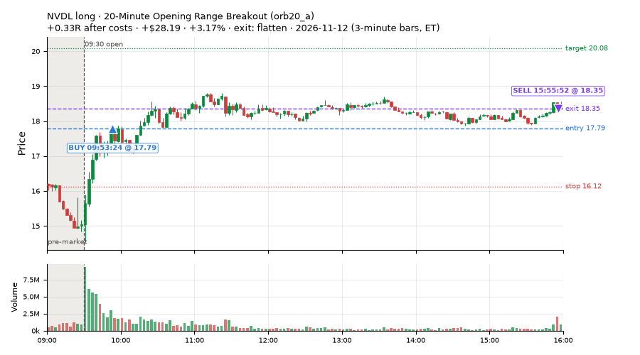
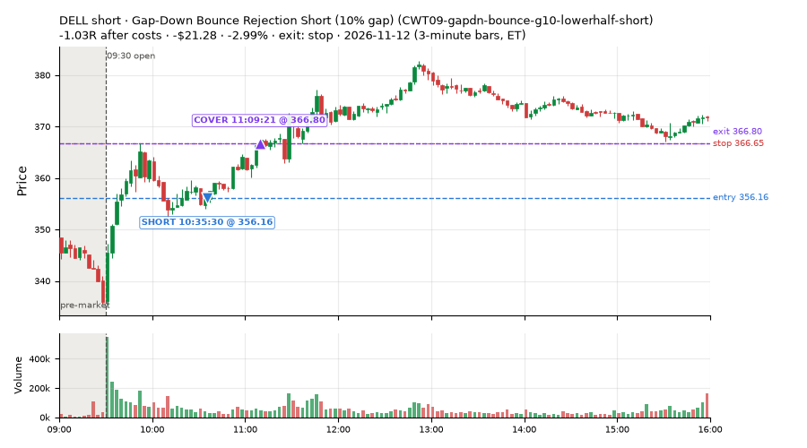
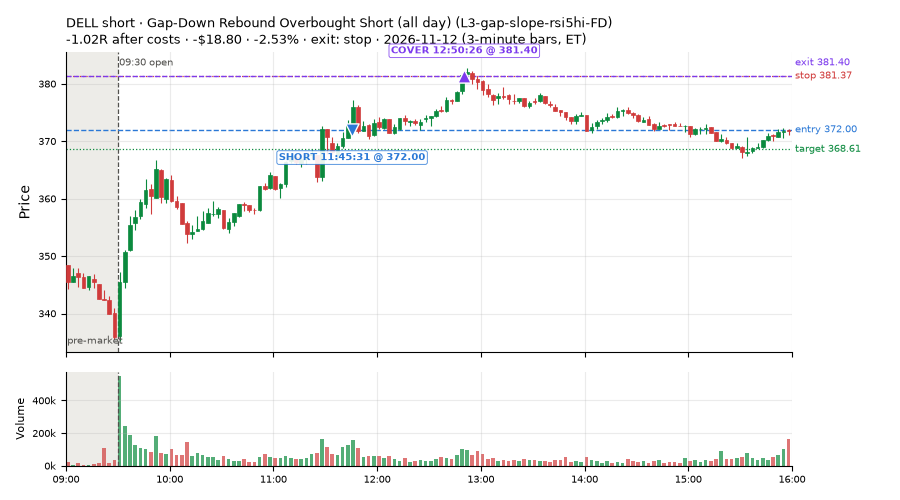
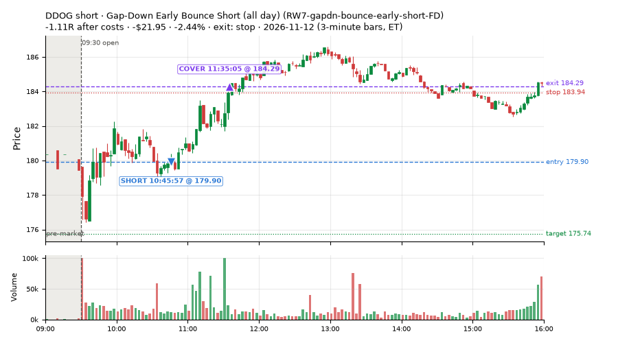
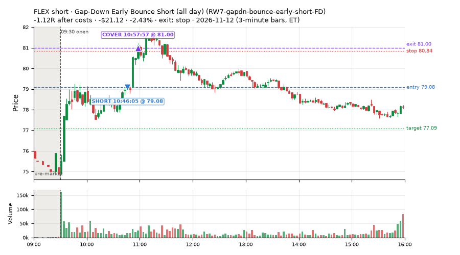
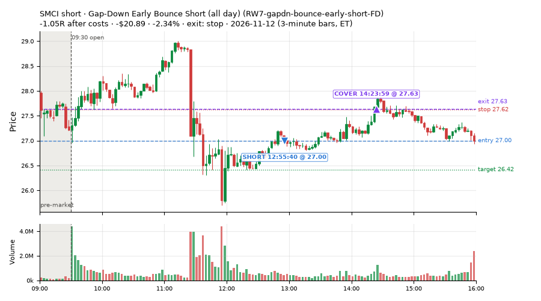

133 trades · win rate 80% · P/L $707.54
PROBATION: no live setup has passed both locked test periods. 10 owner-directed setups added 2026-10-08 (MarcoFlow top 5 + 5 new), untested live. RW6G1 (RW6 + VWAP band guard) added 2026-10-09, probation.

| Symbol | Setup | Side | In | Out | Entry | Exit | Exit reason | % gained | P/L |
|---|---|---|---|---|---|---|---|---|---|
| SOXL | Gap-Down Rebound Overbought Short (all day) (L3-gap-slope-rsi5hi-FD) | short | 11:16 | 11:41 | 68.17 | 65.97 | target | +3.22% | $28.51 |
| AXTI | L3-gap-slope-lowdist-FD | short | 11:25 | 12:21 | 45.35 | 43.91 | target | +3.18% | $27.36 |
| NVDL | 20-Minute Opening Range Breakout (orb20_a) | long | 09:53 | 15:55 | 17.79 | 18.35 | flatten | +3.17% | $28.19 |
| Symbol | Setup | Side | In | Out | Entry | Exit | Exit reason | % lost | P/L |
|---|---|---|---|---|---|---|---|---|---|
| DELL | CWT09-gapdn-bounce-g10-lowerhalf-short | short | 10:35 | 11:09 | 356.16 | 366.80 | stop | -2.99% | $-21.28 |
| DELL | L3-gap-slope-rsi5hi-FD | short | 11:45 | 12:50 | 372.00 | 381.40 | stop | -2.53% | $-18.80 |
| DDOG | RW7-gapdn-bounce-early-short-FD | short | 10:45 | 11:35 | 179.90 | 184.29 | stop | -2.44% | $-21.95 |
| FLEX | RW7-gapdn-bounce-early-short-FD | short | 10:46 | 10:57 | 79.08 | 81.00 | stop | -2.43% | $-21.12 |
| SMCI | RW7-gapdn-bounce-early-short-FD | short | 12:55 | 14:23 | 27.00 | 27.63 | stop | -2.34% | $-20.89 |








Signal to fill: median 2s, 90th percentile 5s (133 trades). Bars close each minute; the order follows the bar close.
Best excursion (MFE): median 0.58R; worst (MAE) median 0.29R. 17% of trades never got +0.25R in our favour; 1 reached +1R and still closed at or below 0.
| Symbol | Setup | Best R | Worst R | Closed R |
|---|---|---|---|---|
| GPN | MF2-open-rsimidhi-flowsell-FD | +1.05 | -1.16 | -1.09 |
| USD | CWT09-gapdn-bounce-g10-lowerhalf-short | +0.59 | -1.30 | -1.15 |
| TIGO | L3-gap-slope-lowdist-FD | +0.34 | -1.18 | -1.22 |
| EMR | RW1-gapdn-bounce-flowsell-short-FD | +0.23 | -1.04 | -1.19 |
| EMR | RW7-gapdn-bounce-early-short-FD | +0.23 | -1.04 | -1.18 |
| Entry time | Trades | Win | Avg R | P/L |
|---|---|---|---|---|
| 09:50-10:30 | 5 | 60% | -0.24 | $21.78 |
| 10:30-11:30 | 42 | 74% | +0.18 | $213.68 |
| 11:30-13:00 | 73 | 89% | +0.44 | $441.30 |
| 13:00-14:00 | 6 | 67% | +0.35 | $28.60 |
| 14:00-16:00 | 7 | 43% | -0.02 | $2.18 |
| Setup | Trades | Win | Avg R after costs | Adj R (net of SPY) | Avg R ex-market (all sessions) | P/L |
|---|---|---|---|---|---|---|
| Panic Flush Reversal (5x volume) (CWT05-flush-m05-v5-long) | 2.0 | 50% | -0.05 | +0.03 | – | $-0.36 |
| Gap-Down Bounce Rejection Short (10% gap) (CWT09-gapdn-bounce-g10-lowerhalf-short) | 2.0 | 0% | -1.09 | -0.92 | – | $-35.49 |
| Gap-Down VWAP Loss Short (10% gap) (CWT09-gapdn-vwaploss-g10-short) | 1.0 | 100% | +0.11 | -0.05 | – | $4.40 |
| L3-gap-slope-lowdist-FD | 32.0 | 84% | +0.57 | +0.33 | -0.09 (beta -1.51, n 105) | $327.11 |
| Gap-Down Rebound Overbought Short (all day) (L3-gap-slope-rsi5hi-FD) | 38.0 | 97% | +0.35 | +0.26 | -0.02 (beta -2.07, n 69) | $302.42 |
| Early Sellers, Mid-High RSI (all day) (MF2-open-rsimidhi-flowsell-FD) | 2.0 | 0% | -1.11 | -1.05 | +0.09 (beta -2.95, n 25) | $-16.68 |
| Early Sellers, Strong Heat (all day) (MF4-h40-open-flowsell-FD) | 5.0 | 60% | -0.16 | -0.23 | -0.01 (beta -2.08, n 43) | $-26.19 |
| Gap-Down Bounce Short, Heavy Selling (all day) (RW1-gapdn-bounce-flowsell-short-FD) | 10.0 | 60% | +0.06 | -0.21 | -0.26 (beta -1.29, n 51) | $-12.95 |
| Gap-Down Early Bounce Short (all day) (RW7-gapdn-bounce-early-short-FD) | 37.0 | 76% | +0.33 | +0.03 | -0.10 (beta -1.22, n 532) | $100.52 |
| ST6-volspikeup-short-mid-t1s1-FD | 2.0 | 50% | +0.27 | +0.08 | +0.20 (beta -0.96, n 8) | $8.79 |
| 20-Minute Opening Range Breakout (orb20_a) failed Apr-Jun holdout: -0.040R/trade over 421 trades | 2.0 | 100% | +0.32 | +0.35 | +0.08 (beta +0.21, n 33) | $55.98 |
Market direction (SPY, beta 1) accounted for $268.08 of today's $707.54; the rest ($439.46) came from the setups themselves. Avg R net of SPY: +0.11 (incl. a hedge leg's cost; report only).
14 setups live today. Today: 465 signals, 133 taken, 5 lost because another setup held the symbol (1%). Since 2026-10-09 (25 sessions): 10103 signals, 4020 taken, 763 lost to other setups (8%). Peak open positions today 72 of 400 slots. Earnings blackout removed 576 symbols before scanning.
Simulated playing time (not live): 5745 what-if trades of signals not taken, avg -0.14R, 49% winners; of them 610 lost to another setup (avg +0.02R).
Silent: IDX1-qqq100-0955-TQQQ-trail, IDX1-qqq100-0955-TQQQ-hold, IDX2-spy075-0945-3x-trail, IDX3-spy075-0955-3x-trail, IDX5-spy050-0945-3x-trail · Crowded out: MF3-open-flowsell-rsi5hi, RW4-ns3-adv150-short-FD, RW4-ns3-adv150-short, NS3-failed-vwap-reclaim-short-FD · Starved: orb20_a, MF1-945-flowsell-vwapup, RW6G1-ns2-up3-vwap2sd-short, LIQ-pdl-sweep-open15-vwap-long, MF5-flowsell-vwapup-rsi5hi, ST5-pdbrkup-short-mid-t05s1-FD, ST3-rsi5up-short-pm-t1s1-FD, exhaustion_short-FD, NS2-sma50break-overbought-short, MF1-945-flowsell-vwapup-FD
| Prio | Setup | Today sig / taken | Sessions | Signals / taken / trades | Taken/day | Expected/day | Lost to other setups | Lost to (setup n) | Top skip reasons | SIMULATED: not-taken n / avg R / win | Verdict |
|---|---|---|---|---|---|---|---|---|---|---|---|
| 1 | ST6-volspikeup-short-mid-t1s1-FD ST6-volspikeup-short-mid-t1s1-FD | 3 / 2 | 19 | 34 / 8 / 8 | 0.42 | 1.24 | 4 | RW4-ns3-adv150-short-FD 3, NS3-failed-vwap-reclaim-short 3, NS3-failed-vwap-reclaim-short-FD 1 | split-tape short gate 13, not shortable / shorts off 6, symbol held by another setup 4 | 24 / -0.13R / 46% | slow 2.1 entries/week; ~28 weeks to 60 trades |
| 2 | Gap-Down Bounce Rejection Short (10% gap) CWT09-gapdn-bounce-g10-lowerhalf-short | 53 / 2 | 1 | 53 / 2 / 2 | 2.00 | – | 0 | – | not shortable / shorts off 49, other 2 | 50 / -0.93R / 8% | slow 10.0 entries/week; ~6 weeks to 60 trades |
| 3 | Panic Flush Reversal (5x volume) CWT05-flush-m05-v5-long | 4 / 2 | 1 | 4 / 2 / 2 | 2.00 | – | 1 | CWT09-gapdn-vwaploss-g10-short 1 | symbol held by another setup 1, spread / quote / size 1 | 2 / +0.59R / 100% | slow 10.0 entries/week; ~6 weeks to 60 trades |
| 4 | Gap-Down VWAP Loss Short (10% gap) CWT09-gapdn-vwaploss-g10-short | 39 / 1 | 1 | 39 / 1 / 1 | 1.00 | – | 0 | – | not shortable / shorts off 38 | 38 / -1.44R / 18% | slow 5.0 entries/week; ~12 weeks to 60 trades |
| 5 | Early Sellers into a Pop MF3-open-flowsell-rsi5hi | 2 / 0 | 19 | 138 / 31 / 31 | 1.63 | 9.19 | 38 | MF3-open-flowsell-rsi5hi-FD 35, MF5-flowsell-vwapup-rsi5hi 13, MF5-flowsell-vwapup-rsi5hi-FD 7 | symbol held by another setup 38, split-tape short gate 38, spread / quote / size 16 | 107 / -0.39R / 35% | crowded-out 38 of 138 signals (28%) lost to setups already holding the symbol |
| 6 | Afternoon Higher-Low Long (near-miss) NM-HL-T75-pm-long | 1 / 0 | 1 | 1 / 0 / 0 | 0.00 | – | 0 | – | spread / quote / size 1 | 1 / +0.45R / 100% | slow no entries yet |
| 7 | Big Gainer Dip-and-Pop NS1-rsidip-rsi5pop-long | 1 / 0 | 2 | 5 / 3 / 3 | 1.50 | 0.92 | 0 | – | spread / quote / size 2 | 2 / +0.39R / 100% | slow 7.5 entries/week; ~8 weeks to 60 trades |
| 8 | L3-gap-slope-lowdist-FD L3-gap-slope-lowdist-FD | 83 / 32 | 24 | 458 / 105 / 105 | 4.38 | 9.76 | 9 | RW6-ns2-up3-short-FD 3, NS2-sma50break-overbought-short-FD 3, L3-gap-slope-rsi5hi-FD 3 | not shortable / shorts off 169, daily loss cap 72, split-tape short gate 50 | 344 / -0.01R / 54% | ok 21.9 entries/week |
| 9 | Gap-Down Rebound Overbought Short (all day) L3-gap-slope-rsi5hi-FD | 169 / 38 | 9 | 507 / 69 / 69 | 7.67 | 13.41 | 10 | L3-gap-slope-fromopen-FD 8, L3-gap-slope-lowdist-FD 4, RW6G1-ns2-up3-vwap2sd-short-FD 2 | not shortable / shorts off 220, daily loss cap 119, spread / quote / size 45 | 416 / -0.05R / 68% | ok 38.3 entries/week |
| 10 | 20-Minute Opening Range Breakout orb20_a | 2 / 2 | 24 | 93 / 33 / 33 | 1.38 | 6.79 | 0 | – | trigger missed between polls 28, spread / quote / size 11, not shortable / shorts off 7 | 54 / +0.06R / 52% | starved 1.38 entries/day vs ~6.79 expected |
| 11 | Early Sellers, Mid-High RSI (all day) MF2-open-rsimidhi-flowsell-FD | 11 / 2 | 9 | 57 / 25 / 25 | 2.78 | 10.09 | 8 | RW7-gapdn-bounce-early-short-FD 3, RW1-gapdn-bounce-flowsell-short-FD 3, RW3-gapdn-rsi5pop-flowsell-short-FD 2 | spread / quote / size 10, symbol held by another setup 8, not shortable / shorts off 8 | 31 / +0.20R / 48% | slow 13.9 entries/week; ~4 weeks to 60 trades |
| 12 | Gap-Down Early Bounce Short (all day) RW7-gapdn-bounce-early-short-FD | 62 / 37 | 24 | 1138 / 532 / 532 | 22.17 | 59.92 | 38 | LIQ-orl-sweep-open15-s25-long 11, RW1-gapdn-bounce-flowsell-short-FD 9, MF2-open-rsimidhi-flowsell-FD 7 | split-tape short gate 195, daily loss cap 110, spread / quote / size 96 | 603 / +0.06R / 54% | ok 110.8 entries/week |
| 13 | Gap-Down Bounce Short, Heavy Selling (all day) RW1-gapdn-bounce-flowsell-short-FD | 19 / 10 | 8 | 77 / 51 / 51 | 6.38 | 17.10 | 10 | RW3-gapdn-rsi5pop-flowsell-short-FD 5, MF2-open-rsimidhi-flowsell-FD 3, RW5-heat30-flowsell-rsi5pop-gapdn-short-FD 3 | symbol held by another setup 10, spread / quote / size 7, other 5 | 24 / +0.37R / 75% | ok 31.9 entries/week |
| 14 | Early Sellers, Strong Heat (all day) MF4-h40-open-flowsell-FD | 16 / 5 | 9 | 115 / 43 / 43 | 4.78 | 16.45 | 25 | MF5-flowsell-vwapup-rsi5hi-FD 9, MF1-945-flowsell-vwapup-FD 6, RW3-gapdn-rsi5pop-flowsell-short-FD 6 | symbol held by another setup 25, split-tape short gate 16, spread / quote / size 14 | 69 / -0.25R / 46% | ok 23.9 entries/week |
Every trade is attached as a CSV you can open and edit in Excel or Google Sheets. Live page: https://misiti15.github.io/MCF/live/